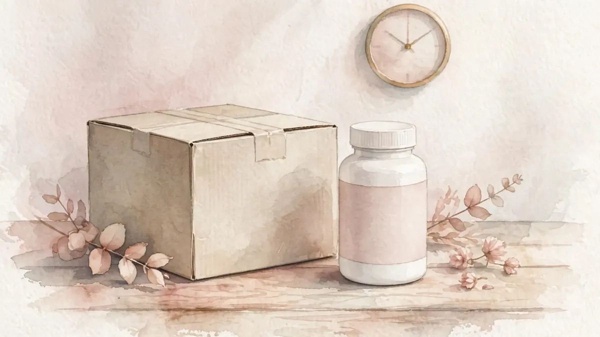

トップ ＞ インナーケア・サプリ ＞ 定期便の休止・間隔変更の条件の読み方
定期便の休止・間隔変更の条件の読み方

定期便でサプリメントを続けていると、在庫が余ってきたり、使うペースが変わったりして、「少し間を空けたい」と思う場面があります。そのときに必要になるのが、休止や間隔変更の条件の読み方です。この記事では、条件表示のどこを、どの順番で確認するかを整理します。
条件は「申し込みページ」と「マイページ」の両方を見る
休止や変更の案内は、購入を申し込むページと、購入後にログインするマイページの両方に書かれていることが多いです。ただし、書かれ方は同じとは限りません。申し込みページでは「いつでも変更できます」といった概要、マイページでは次回お届け予定日や変更の操作画面、というように役割が分かれていることがあります。
これから申し込む方は、契約前に条件の詳細まで目を通しておくことが大切です。すでに利用中の方は、マイページの案内が今の自分の条件です。両方を確認する習慣をつけておくと、「知らなかった」という行き違いを防げます。
読むポイントは「締切日・回数・方法」
条件表示で特に大切なのは、変更の締切日です。「次回お届け予定日の○日前まで」という形で書かれていることが多く、この日を過ぎると次の便から変更になります。予定日そのものもマイページで確認できます。
次に、休止できる期間や回数に条件があるかどうかです。そして言葉の違いにも注意してください。「スキップ」は1回分だけを飛ばすこと、「休止」は一定期間止めることを指す使い分けが一般的です。間隔変更は、届く周期そのものを延ばす変更です。どの言葉で案内されているかで、手続きの内容が変わります。手続きの方法が電話のみか、Webで完結するかも確認点です。
変更したら、控えを残す
変更の手続きが終わったら、完了画面や確認メールを残しておきます。新しい次回お届け予定日は、手帳やカレンダーに書いておくと、届く前に在庫の確認ができます。
定期便は、続けるための仕組みであると同時に、自分のペースに合わせて調整するための条件が用意されているものです。条件を読めるようになると、「余るからやめる」ではなく「間隔を延ばして続ける」という選択肢が見えてきます。まずは今の定期便の条件を、一度読み直してみてください。
解約との違いも、言葉で確認する
条件表示を読むときは、「休止」と「解約」の案内が並んで書かれていることもあります。休止は再開を前提に止める手続き、解約は契約そのものを終える手続きです。将来また使う可能性がある場合は、休止や間隔変更で足りることが多いです。どちらの手続きにも締切日や方法の条件があるため、言葉を取り違えないよう、案内の見出しを確認してください。
電話で手続きをする場合は、通話の日時と、案内された内容（次回予定日や再開の時期）をメモに残しておくと安心です。Webで手続きした場合も、完了画面の控えを残す習慣は同じです。条件は申し込む前に読むものですが、利用中も定期的に読み直すことで、自分のペースに合った続け方を選べます。
在庫が余る前に間隔を延ばす、という使い方もできます。次回分が届く前に手元の在庫を数え、消費ペースと合っていないと感じたら、締切日より早めに変更するのが確実です。条件の読み方は、慌ててからではなく、余裕のあるときに身につけておくものです。
条件を確認するついでに、次回お届け予定日の確認方法も覚えておいてください。マイページのどの画面で予定日が見られるかを知っているだけで、変更の締切日との照らし合わせがその場でできます。予定日と締切日は、常に対で確認するものです。メールで届く発送案内も、予定日の控えとして使えます。条件のページは、申し込み時と利用中とで案内が更新されることもあるため、変更の前に最新の案内を読む習慣をつけてください。
セラフィナ「休止の条件は申し込む前に読むもの。締切日だけは手帳に書いておこう」